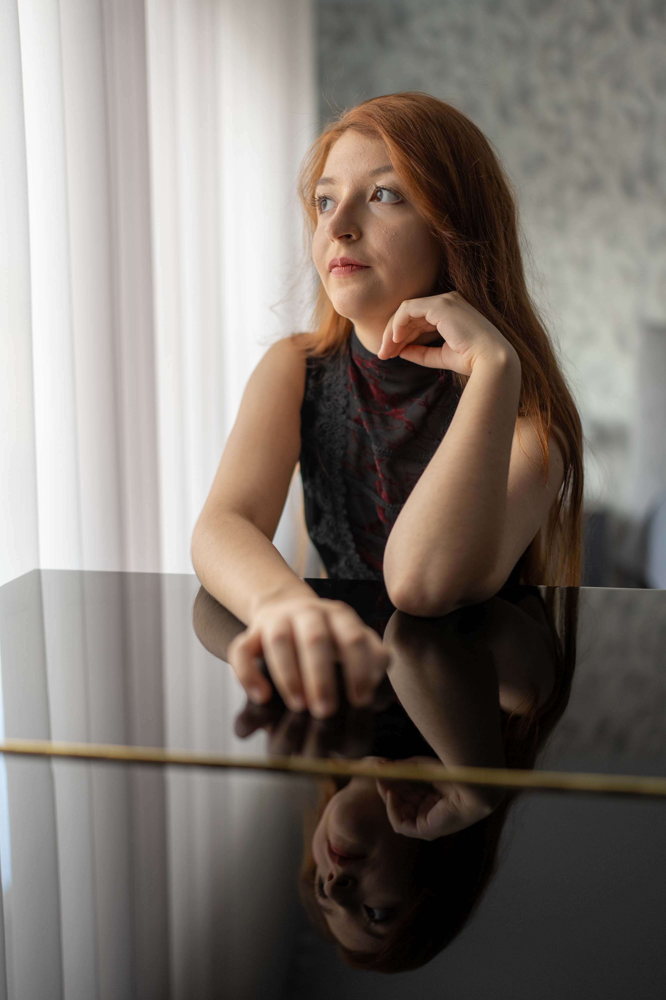

Born in 2008 in Bucharest, pianist Carla Ungureanu was recognized for her artistic maturity and interpretive coherence from a young age. A former student at the "Dinu Lipatti" National College of Arts under Prof. Dr. Olga Podobinschi, she furthered her studies at the Schola Cantorum de Paris. There, she graduated from the Cycle Supérieur in 2023 with the highest honors: "Très bien à l'unanimité avec les félicitations du jury".
Her artistic development was also shaped by the mentorship of pianists and professors as: Shwan Sebastian, Andreas Fröhlich, Adela Liculescu, Viniciu Moroianu, Mikail Lifits, and Giuseppe Devastato.
Carla’s performance career began with a solo debut at age 12 and expanded to prestigious international stages, including Ehrbar Saal (Vienna), École Normale de Musique "Alfred Cortot" (Paris), and Sala Eutherpe (León), Auditorium Hall – MNAR, ARCUB Gabroveni, Romanian Atheneum (Bucharest), The Brâncovenesc Heritage Palaces, and the Brasov Philharmonic. As a soloist, she performed with notable ensembles such as the "Mihail Jora" Philharmonic, "Ion Dumitrescu" Philharmonic, and the "Serghei Lunchevici" National Philharmonic, interpreting works by Mozart, Saint-Saëns, and Dinu Lipatti.
A laureate of over 50 competitions, her accolades include First Prize at the Carles & Sofia International Piano Competition, WPTA Spain International Piano Competition, Orbetello Junior International Piano Competition, and the Grand Prize at the "Paul Constantinescu" National Competition.
A frequent guest at the Remember Enescu Foundation, she remained a dedicated advocate for the Romanian school of piano and Enescu's musical legacy.